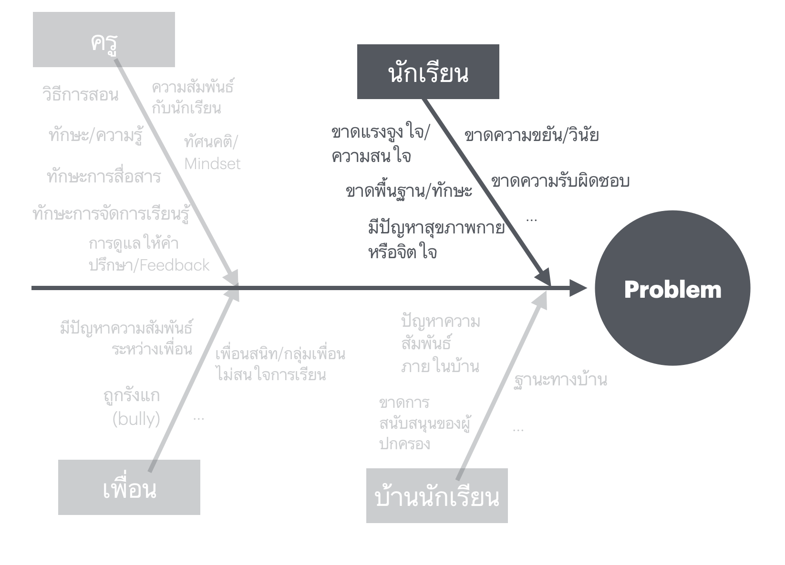
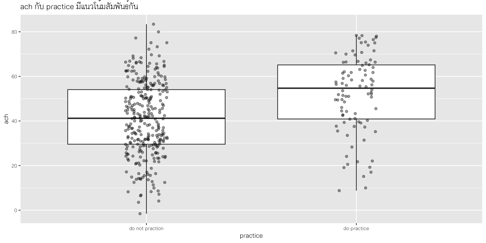

stateDiagram-v2
direction LR
classDef yourState font-style:italic,font-weight:bold,fill:white
[*] --> A
A: Identify \n the Problem
A --> B
B: Frame \n the Problem
B --> C
C: Analyze & \n Validate Causes
C --> D
D: Develop and \n Implement \n Solutions
D --> E
E: Monitoring and \n Evaluation
E --> A: Not Success
E --> [*]: Success
Diagnostic Analytics
Why did this happen?
ผศ.ดร.สิวะโชติ ศรีสุทธิยากร
ภาควิชาวิจัยและจิตวิทยาการศึกษา
คณะครุศาสตร์ จุฬาลงกรณ์มหาวิทยาลัย
2024-09-30
Type of Data Analytics

Outline
Introduction to Diagnostic Analytics
Process in Diagnostic Analysis
Identify the Problem
Frame the Problem
Analyze & Validate Causes
Introduction to Diagnostic Analytics
What’s Diagnostic Analysis?
การวิเคราะห์เชิงวินิจฉัย (Diagnostic Analytics) คือ กระบวนการวิเคราะห์ข้อมูล เพื่อระบุ สาเหตุหรือปัจจัยที่มีความสัมพันธ์กับปัญหาหรือสถานการณ์ที่เกิดขึ้น
เป็นขั้นตอนต่อเนื่องจากการใช้การวิเคราะห์เชิงพรรณนา (Descriptive Analytics)

Diagnostic Analysis in Classroom
การวิเคราะห์ข้อมูลเพื่อระบุสาเหตุหรือปัจจัยที่มีความสัมพันธ์กับปัญหาหรือสถานการณ์ที่เกิดขึ้นในห้องเรียน
ครูมะเป็นผู้รับผิดชอบสอนรายวิชาสถิติให้กับนักเรียนชั้นมัธยมศึกษา โดยในช่วงแรกของการจัดการเรียนรู้ นักเรียนจะได้รับมอบหมายให้ทำการบ้านเกี่ยวกับหัวข้อที่เรียนไป เมื่อผ่านไป 3 สัปดาห์ครูมะปรางได้เริ่มนำข้อมูลคะแนนการบ้านของนักเรียนมาวิเคราะห์ (คะแนนเต็ม 20 คะแนน) ด้านล่างนี้แสดงผลการวิเคราะห์ของครูมะปราง
Diagnostic Analysis in Classroom
การประเมินแนวโน้มความสำเร็จหรือล้มเหลวของผู้เรียนในการเรียนรู้
ระบุตัวนักเรียนที่มีความเสี่ยงในการเรียนรู้
ออกแบบการสนับสนุนนักเรียนที่มีความเสี่ยงแบบเฉพาะบุคคล

https://onlinelibrary.wiley.com/doi/epdf/10.1111/emip.12470
Diagnostic Analysis in Classroom

Process in Diagnistic Analysis
https://www.amstat.org/asa/files/pdfs/GAISE/GAISEIIPreK-12_Full.pdf
Process in Diagnostic Analysis
ลักษณะสำคัญคือเป็นกระบวนการที่มีลักษณะสืบเสาะและทวนซ้ำกัน

Identify the Problem: ระบุปัญหาหรือสิ่งที่ต้องการวิเคราะห์เพื่อวินิจฉัย
Frame the Problem: ระบุสาเหตุหรือปัจจัยที่สัมพันธ์กับปัญหา เป็นการสร้างกรอบการวิเคราะห์/ตั้งสมมุติฐานเกี่ยวกับสาเหตุหรือปัจจัยที่เกี่ยวข้องกับปัญหา
Analysis & Validate Causes: เก็บรวบรวมข้อมูลตามกรอบและวิเคราะห์ข้อมูลเพื่อระบุสาเหตุหรือปัจจัยที่สัมพันธ์กับปัญหา
Develop and Implement Solutions: ออกแบบวิธีการแก้ปัญหาและนำไปปฏิบัติ
Monitoring and Evaluation: ติดตามและประเมินผลการปฏิบัติตามวิธีการแก้ปัญหาที่นำไปปฏิบัติ
https://www.siteware.co/blog/methodologies/what-is-the-pdca-cycle/
Identify the Problem
stateDiagram-v2
direction LR
classDef yourState font-style:italic,font-weight:bold,fill:white
[*] --> A
A: Identify \n the Problem
A:::yourState --> B
B: Frame \n the Problem
B --> C
C: Analyze & \n Validate Causes
C --> D
D: Develop and \n Implement \n Solutions
D --> E
E: Monitoring and \n Evaluation
E --> A: Not Success
E --> [*]: Success
Identify the Problem
stateDiagram-v2 [*] --> A A --> B B --> C C --> [*] A: <b>Preliminary Data</b> B: <b>Descriptive Analysis</b> C: <b>Define Problems</b>
ข้อมูล quiz ของนักเรียนที่เรียนรายวิชาคณิตศาสตร์
quiz1 quiz2 quiz3
Min. :0.000 Min. :0.000 Min. : 0.000
1st Qu.:0.800 1st Qu.:1.800 1st Qu.: 3.100
Median :3.000 Median :3.900 Median : 6.000
Mean :3.009 Mean :3.827 Mean : 6.127
3rd Qu.:4.825 3rd Qu.:5.900 3rd Qu.: 8.825
Max. :7.500 Max. :7.500 Max. :14.400 Identify the Problem
stateDiagram-v2 [*] --> A A --> B B --> C C --> [*] A: <b>Preliminary Data</b> B: <b>Descriptive Analysis</b> C: <b>Define Problems</b>
ข้อมูล quiz ของนักเรียนที่เรียนรายวิชาคณิตศาสตร์

อะไรเป็นปัญหาของผู้เรียนกลุ่มนี้บ้าง ?
มัธยฐานของ quiz ครั้งที่ 1 และ 3 ค่อนข้างต่ำ
ทุก quiz มีนักเรียนที่สอบได้ 0 คะแนนหรือใกล้เคียงเป็นจำนวนที่ค่อนข้างมาก
quiz 1 และ 2 เหมือนจะมีการแจกแจงแบบสองฐานนิยม
ในขณะที่ quiz 3 มีแนวโน้มจะมีฐานนิยมเดียวแต่มัธยฐานและ quartile ที่ 3 ค่อนข้างต่ำ
Identify the Problem with Generative AI
เป็นไปได้ว่าบางกรณีเราสามารถแบ่งผลการวิเคราะห์จาก descriptive statistics ได้แต่ไม่สามารถระบุปัญหาหรือสาเหตุได้ ในกรณีนี้เราสามารถใช้ Generative AI เพื่อช่วยระบุปัญหา (รวมทั้งสาเหตุของปัญหา) ที่อาจเป็นไปได้
-
Gen AI คือปัญญาประดิษฐ์ประเภทหนึ่งที่มีความสามารถหลักในการสร้างเนื้อหา (content) ที่หลากหลาย
ข้อความ (text)
ภาพ (image)
วิดีโอ (video)
เสียง (audio)
Generative AI


Generative AI


Hallucinations
Gen AI ในปัจจุบันสร้าง content โดย based on โมเดลความน่าจะเป็น (probabilistic model)
-
การกำหนด prompt ที่ไม่เหมาะสมอาจทำให้เกิดปัญหาที่เรียกว่า hallucinations หรือการสร้างเนื้อหาที่ไม่เป็นจริง
ผลลัพธ์ที่ไม่มีพื้นฐานจากข้อมูลที่ถูกต้องหรือเป็นจริง ซึ่งอาจเป็นข้อมูลที่เข้าใจผิดหรือไม่เกี่ยวข้องกับคำถามหรือข้อมูลนำเข้าที่ได้รับ
บางสถานการณ์ AI อาจให้คำตอบที่ดูเหมือนจะถูก/สมเหตุสมผล หรืออาจจะถูกจริง ๆ แต่ไม่ตรงกับสิ่งที่ผู้ใช้ต้องการ
Hallucinations

Prompt Design
โดยทั่วไป Generative AI เช่น ChatGPT ถูกฝึกสอนจากฐานข้อมูลขนาดใหญ่มากอยู่แล้ว ดังนั้นในแต่ละ prompt ที่ป้อนเข้าไปจึงมีความเป็นไปได้จำนวนมากของคำตอบ
Prompt Design คือกระบวนการสร้างคำสั่ง/ข้อมูลนำเข้าสำหรับ Generative AI ที่นำไปสู่การสร้างผลลัพธ์ที่มีความถูกต้อง/สมเหตุสมผล/ตรงกับความต้องการ
flowchart LR
subgraph
B["Task"]-->A(("Prompt"))
C["Context"]-->A(("Prompt"))
end
D["Fine-Tuning"]-.->B
D["Fine-Tuning"]-.->C
Task คืองานที่ต้องการให้ Chat GPT ทำ ซึ่งอาจอยู่ในรูปของประโยคคำถาม คำ สั่ง หรือข้อความที่ไม่สมบูรณ์เพื่อให้โมเดลเขียนต่อ
Context คือบริบทหรือข้อมูลเพิ่มเติมสำหรับประกอบการสร้างผลลัพธ์ของโมเดล
Fine-Tuning คือการปรับปรุงคำตอบของโมเดลเพื่อให้มีความแม่นยำ สอดคล้องกับบริบทและเหมาะสมกับความต้องการของผู้ใช้มากขึ้น ผ่านการพิมพ์โต้ตอบกับผู้ใช้
Prompt Design: Task
Describe, Explain
Classify
Summarize, Group
List, Suggest
Write, Rewrite, Generate
Design
Creat
Ideate
Give
Prepare
Compare
Translation
Correct
Break down
What?
How?
Prompt = Task + Context
Task Only 
Task with Context 
Fine-Tuning Prompt


ตัวอย่างการใช้ ChatGPT เพื่อระบุปัญหาโดยใช้ข้อมูลจริงเป็นฐาน

Analysis using Gen AI

Analysis using Gen AI

Analysis using Gen AI


Analysis using Gen AI: Final Output

จุดเด่นข้อจำกัดของ Gen AI
Identify the Problem
เราสามารถ filter ข้อมูลนักเรียนที่ได้ 0 คะแนน ในการ quiz แต่ละครั้งขึ้นมาดูได้
ได้ quiz1 = 0 (37 คน)
stu_id quiz1 quiz2 quiz3
1 5 0 1.5 4.0
2 11 0 0.6 1.6
3 14 0 0.0 0.0
4 34 0 0.0 0.0
5 35 0 0.0 0.0
6 37 0 1.0 4.1
7 67 0 0.0 0.0
8 70 0 0.6 1.0
9 121 0 0.3 2.1
10 142 0 2.0 2.2
11 191 0 0.0 0.0
12 201 0 1.4 2.2
13 218 0 0.0 0.0
14 225 0 0.0 0.0
15 263 0 0.6 1.4
16 264 0 0.3 2.5
17 273 0 0.4 1.0
18 277 0 0.1 1.0
19 279 0 0.6 0.8
20 289 0 0.4 1.7
21 290 0 0.4 0.9
22 293 0 0.0 0.0
23 294 0 0.0 0.0
24 300 0 0.0 0.0
25 317 0 0.0 0.0
26 325 0 0.3 1.4
27 326 0 1.6 1.6
28 335 0 0.0 0.0
29 340 0 0.4 0.9
30 361 0 0.0 0.0
31 367 0 2.6 3.2
32 383 0 0.4 1.7
33 384 0 0.4 1.7
34 388 0 0.0 0.0
35 397 0 2.9 8.1
36 399 0 0.6 2.7
37 401 0 0.8 2.2ได้ quiz2 = 0 (17 คน)
stu_id quiz1 quiz2 quiz3
1 14 0.0 0 0
2 34 0.0 0 0
3 35 0.0 0 0
4 67 0.0 0 0
5 75 2.7 0 0
6 89 1.5 0 0
7 191 0.0 0 0
8 218 0.0 0 0
9 225 0.0 0 0
10 239 5.9 0 0
11 293 0.0 0 0
12 294 0.0 0 0
13 300 0.0 0 0
14 317 0.0 0 0
15 335 0.0 0 0
16 361 0.0 0 0
17 388 0.0 0 0ได้ quiz3 = 0 (17 คน)
stu_id quiz1 quiz2 quiz3
1 14 0.0 0 0
2 34 0.0 0 0
3 35 0.0 0 0
4 67 0.0 0 0
5 75 2.7 0 0
6 89 1.5 0 0
7 191 0.0 0 0
8 218 0.0 0 0
9 225 0.0 0 0
10 239 5.9 0 0
11 293 0.0 0 0
12 294 0.0 0 0
13 300 0.0 0 0
14 317 0.0 0 0
15 335 0.0 0 0
16 361 0.0 0 0
17 388 0.0 0 0Frame the Problem
stateDiagram-v2
direction LR
classDef yourState font-style:italic,font-weight:bold,fill:white
[*] --> A
A: Identify the Problem
A: นักเรียนจำนวนหนึ่งมีปัญหา \n ในการทำความเข้าใจเนื้อหา
A --> B:::yourState
B: Frame \n the Problem
B --> C
C: Analyze & \n Validate Causes
C --> D
D: Develop and \n Implement \n Solutions
D --> E
E: Monitoring and \n Evaluation
E --> A: Not Success
E --> [*]: Success
Frame the Problem
flowchart LR A((Factors?)) --> B[Problems]
-
ขั้นตอนนี้มีวัตถุประสงค์หลักคือเพื่อกำหนดกรอบในการอธิบายปัญหาหรือสถานการณ์ที่เกิดขึ้น
Fishbone Diagram (Ishikawa Diagram)
Five Whys Analysis


Fishbone Diagram (Ishikawa Diagram)
เป็นเครื่องมือที่ใช้ในการวิเคราะห์สาเหตุของปัญหา โดยมีลักษณะคล้ายโครงกระดูกปลา จึงเรียกว่า “Fishbone” หรือที่รู้จักอีกชื่อหนึ่งว่า Cause-and-Effect Diagram การวิเคราะห์นี้มีวัตถุประสงค์เพื่อระบุและจัดกลุ่มปัจจัยที่เป็นสาเหตุของปัญหาต่าง ๆ อย่างเป็นระบบ เพื่อให้เห็นภาพรวมของสาเหตุที่อาจก่อให้เกิดปัญหาหรือความไม่พึงประสงค์ที่เกิดขึ้น และช่วยให้สามารถแก้ไขปัญหาได้ตรงจุดมากขึ้น
-
ส่วนประกอบของ Fishbone Diagram
ปัญหาหรือสถานการณ์ที่เกิดขึ้น (Problem)
สาเหตุหลัก (Main Cause)
สาเหตุย่อย (Sub-Cause)
5M model Fishbone Diagram (Ishikawa Diagram)
Manpower / Mindpower (physical or knowledge work, includes: kaizens, suggestions)
Machine (equipment, technology)
Material (includes raw material, consumables, and information)
Method (process)
Measurement / medium (inspection, environment)
https://en.wikipedia.org/wiki/Ishikawa_diagram
Classroom Fishbone Diagram (Ishikawa Diagram)
นักเรียน
ครู
บ้าน
เพื่อน
สภาพแวดล้อม
…
Classroom Fishbone Diagram (Ishikawa Diagram)

Classroom Fishbone Diagram (Ishikawa Diagram)
Classroom Fishbone Diagram (Ishikawa Diagram)

Classroom Fishbone Diagram (Ishikawa Diagram)

Classroom Fishbone Diagram (Ishikawa Diagram)
Classroom Fishbone Diagram (Ishikawa Diagram)
Analysis Framework (1)
flowchart LR
B(("แรงจูงใจ"))-->A["การเข้าเรียน"]
C(("ความขยัน/รับผิดชอบ"))--> A
B-->D["มาสาย"]
C-->D
F(("ความรู้พื้นฐาน"))-->E["ผลการเรียน Math ในอดีต"]
subgraph analysis_framework ["Analysis Framework"]
A-->G["เรียนไม่รู้เรื่อง"]
D-->G
E-->G
end
Analysis Framework (2)
flowchart LR
B(("แรงจูงใจ"))-->A["การเข้าเรียน"]
B-->J["ปฏิสัมพันธ์ในชั้นเรียน"]
C(("ความขยัน/รับผิดชอบ"))--> A
C-->L["การทำการบ้าน/งานฯ"]
B-->D["มาสาย"]
C-->D
F(("ความรู้พื้นฐาน"))-->E["ผลการเรียน Math ในอดีต"]
H(("ปัญหาด้านอารมณ์สังคม")) --> A
H(("ปัญหาด้านอารมณ์สังคม")) --> D
H --> I["ไม่มีเพื่อน"]
H --> M["โดนกลั่นแกล้ง"]
H --> L
subgraph analysis_framework ["Analysis Framework"]
A-->G["เรียนไม่รู้เรื่อง"]
D-->G
E-->G
I-.->G
J-->G
L-->G
M-->G
end
Analysis Framework (3)
flowchart LR
B(("แรงจูงใจ"))-->A["การเข้าเรียน"]
B-->J["ปฏิสัมพันธ์ในชั้นเรียน"]
C(("ความขยัน/รับผิดชอบ"))--> A
C-->L["การทำการบ้าน/งานฯ"]
B-->D["มาสาย"]
C-->D
F(("ความรู้พื้นฐาน"))-->E["ผลการเรียน Math ในอดีต"]
H(("ปัญหาด้านอารมณ์สังคม")) --> A
H(("ปัญหาด้านอารมณ์สังคม")) --> D
H --> I["ไม่มีเพื่อน"]
H --> M["โดนกลั่นแกล้ง"]
H --> L
N(("ปัญหาทางบ้าน"))-->H
N-->B
N-->C
N-->F
subgraph analysis_framework ["Analysis Framework"]
A-->G["เรียนไม่รู้เรื่อง"]
D-->G
E-->G
I-.->G
J-->G
L-->G
M-->G
end
Data Analysis
stateDiagram-v2
direction LR
classDef yourState font-style:italic,font-weight:bold,fill:white
[*] --> A
A: Identify the Problem
A: นักเรียนจำนวนหนึ่งมีปัญหา \n ในการทำความเข้าใจเนื้อหา
A --> B
B: Frame \n the Problem
B --> C:::yourState
C: Analyze & \n Validate Causes
C --> D
D: Develop and \n Implement \n Solutions
D --> E
E: Monitoring and \n Evaluation
E --> A: Not Success
E --> [*]: Success
Data Analysis
ก่อนการวิเคราะห์สาเหตุ/ปัจจัยที่สัมพันธ์กับปัญหา คุณครูอาจจำเป็นต้องเก็บรวบรวมข้อมูลเพิ่มเติมตามกรอบแนวคิดที่ได้สร้างไว้
Rows: 404
Columns: 15
$ quiz1 <dbl> 2.0, 0.2, 0.7, 3.8, 0.0, 6.9, 0.4, 0.3, 5.1, 3.…
$ quiz2 <dbl> 2.3, 0.6, 2.3, 4.7, 1.5, 6.7, 1.8, 2.1, 5.4, 6.…
$ quiz3 <dbl> 6.1, 3.2, 6.6, 6.7, 4.0, 12.5, 4.0, 1.6, 9.8, 5…
$ percent_attend <dbl> 1.00000000, 1.00000000, 1.00000000, 1.00000000,…
$ percent_late_inclass <dbl> 0.45454545, 0.27272727, 0.00000000, 0.18181818,…
$ percent_goout <dbl> 0.00000000, 0.18181818, 0.00000000, 0.09090909,…
$ percent_answer_inclass <dbl> 0.0000000, 1.0000000, 1.0000000, 1.0000000, 1.0…
$ practice <chr> "some_practice", "no_pratice", "no_pratice", "s…
$ time_do_homework1 <dbl> 9, 40, 26, 17, 10, 93, 56, 4244, 63, 60, NA, 12…
$ time_do_homework2 <dbl> NA, 424, 7, 15, 7, 49, 280, 7187, 10, 47, NA, 1…
$ percent_time_start1 <dbl> 0.8383949, 0.8064751, 0.8278158, 0.8580027, 0.9…
$ percent_time_start2 <dbl> NA, 0.9200598, 0.8916592, 0.8205082, 0.9962332,…
$ late_assignment <chr> "ontime", "ontime", "ontime", "ontime", "late",…
$ incomplete_assignment <chr> "complete", "complete", "complete", "complete",…
$ pre_grade_inmath <chr> "not success", "not success", "not success", "s…Data Analysis
Descriptive Analysis
Pareto Analysis
Generative AI
Drill Down Analysis
Correlation Analysis
Regression Analysis
Decision Tree
Root Cause Analysis (RCA) เช่น five whys
…
Data Analysis: Descriptive Analysis
เป็นขั้นตอนเบื้องต้นของการวิเคราะห์ diagnostic
วัตถุประสงค์คือเพื่อทำความเข้าใจลักษณะเบื้องต้นของความสัมพันธ์ระหว่างปัจจัยกับปัญหา
-
การวิเคราะห์ที่อาจดำเนินการได้
บรรยายสภาพข้อมูลปัจจัยต่าง ๆ ตามกรอบแนวคิดที่ได้สร้างขึ้น
เปรียบเทียบสภาพของปัจจัยต่าง ๆ ระหว่างกลุ่มนักเรียนที่มีปัญหา/สนใจ กับกลุ่มนักเรียนที่ไม่มีปัญหาหรือไม่ได้สนใจ
วิเคราะห์ความสัมพันธ์เบื้องต้นระหว่างปัจจัยกับสภาพปัญหา
Descriptive: สภาพปัจจัยที่คาดว่าน่าจะสัมพันธ์กับปัญหา
ลองคัดกรองเฉพาะผู้เรียนที่มีปัญหาเรียนไม่รู้เรื่อง จากนั้นวิเคราะห์สภาพของปัจจัยที่คาดว่าน่าจะสัมพันธ์กับปัญหา (quiz1 = 0)

Descriptive: สภาพปัจจัยที่คาดว่าน่าจะสัมพันธ์กับปัญหา
ลองคัดกรองเฉพาะผู้เรียนที่มีปัญหาเรียนไม่รู้เรื่อง จากนั้นวิเคราะห์สภาพของปัจจัยที่คาดว่าน่าจะสัมพันธ์กับปัญหา

Descriptive: เปรียบเทียบสภาพปัจจัยระหว่างกลุ่ม

Descriptive: เปรียบเทียบสภาพปัจจัยระหว่างกลุ่ม
Descriptive: เปรียบเทียบสภาพปัจจัยระหว่างกลุ่ม

Descriptive: เปรียบเทียบสภาพปัจจัยระหว่างกลุ่ม

Data Analysis
Descriptive Analysis
Pareto Analysis
Generative AI
Drill Down Analysis
Correlation Analysis
Regression Analysis
Decision Tree
Root Cause Analysis (RCA) เช่น five whys
…
Descriptive Analysis
ผลการวิเคราะห์ด้วยสถิติบรรยายในเบื้องต้นบ่งชี้ว่า
ความรู้พื้นฐานทางคณิตศาสตร์ น่าจะเป็นปัจจัยหนึ่งที่สัมพันธ์กับปัญหา
การทบทวนบทเรียน ก็อาจจเป็นปัจจัยหนึ่งแต่ไม่ค่อยชัดเจนนัก
Diagnostic Analysis II
ทบทวน : ปัญหาที่เกิดขึ้น
นักเรียนบางส่วนมีความเข้าใจในเนื้อหาไม่เพียงพอ
ทุก quiz มีนักเรียนที่สอบได้ 0 คะแนนหรือใกล้เคียงเป็นจำนวนพอสมควร
ทุก quiz มีนักเรียนที่ได้คะแนนต่ำกว่าครึ่งค่อนข้างมาก

Data Analysis
Descriptive AnalysisPareto Analysis
Generative AI
Drill Down Analysis
Correlation Analysis
Regression Analysis
Decision Tree
Root Cause Analysis (RCA) เช่น five whys
…
Pareto Chart (0)
:max_bytes(150000):strip_icc()/ParetoExample2-e075b949a3af4751a329954498103d1b.JPG)
https://www.investopedia.com/terms/p/pareto-analysis.asp
Pareto Chart (1)
“roughly 80% of consequences come from 20% of causes”

เป็นแผนภูมิที่ใช้แสดงการแจกแจงของปัจจัยที่คาดว่าจะสัมพันธ์กับปัญหา
แนวคิดเบื้องหลังมาจาก Pareto Principle
https://th.hrnote.asia/orgdevelopment/8020rule-paretoprinciple-01182021/
Pareto Chart (2)
วัตถุประสงค์ : ระบุปัจจัยที่สำคัญที่สุดที่คาดว่าจะสัมพันธ์กับปัญหานักเรียนบางส่วนมีความเข้าใจในเนื้อหาไม่เพียงพอ
flowchart LR
A[Data]-->B["คัดกรองนักเรียนที่เป็นปัญหา"]
B-->C["สร้าง Pareto Chart"]
C-->D(("ระบุปัจจัยสำคัญ"))
Pareto Chart (3)
คัดกรองนักเรียนที่เป็นปัญหา
flowchart TD A["Data: \n - quiz1 (7.5) - quiz2 (7.5) - quiz3 (15)"] --> B["Standardized"] B --> C["รวมคะแนน quiz เข้าด้วยกัน"] C --> D["คัดกรองนักเรียนที่มีปัญหา"] style A fill:#ffffff, stroke: black, stroke-width: 2px
รวมคะแนนทั้ง 3 quiz เป็นคะแนนรวมของนักเรียนก่อนจากนั้นค่อยเลือกนักเรียนที่มีปัญหาจากคะแนนรวม จะช่วยให้เราคัดกรองนักเรียนได้ง่ายขึ้น
-
การรวมคะแนนทำได้หลายวิธี เช่น ใช้ค่าเฉลี่ย หรืออาจใช้มัธยฐาน หรือผลสอบครั้งที่ดีที่สุด การเลือกใช้วิธีการไหนขึ้นอยู่กับความเหมาะสมและบริบท
quiz1 เต็ม 7.5 คะแนน
quiz2 เต็ม 7.5 คะแนน
quiz3 เต็ม 15 คะแนน
Pareto Chart (4)
คัดกรองนักเรียนที่เป็นปัญหา
flowchart TD A["Data: \n - quiz1 (7.5) - quiz2 (7.5) - quiz3 (15)"] --> B["Standardized"] B --> C["รวมคะแนน quiz เข้าด้วยกัน"] C --> D["คัดกรองนักเรียนที่มีปัญหา"] style B fill:#ffffff, stroke: black, stroke-width: 2px
จะเห็นว่าแต่ละ quiz คะแนนเต็มไม่เท่ากัน ก่อนการรวมคะแนนจึงควรปรับคะแนนให้เท่ากันก่อน
ทำเป็นคะแนนที่เต็มเท่ากัน เช่น ร้อยละ หรืออื่น ๆ
แปลงเป็นคะแนนมาตรฐาน \(Z = \frac{x-M}{SD}\) (standardization)
แปลงเป็นคะแนนมาตรฐาน \(d = \frac{x-min}{max-min}\) (normalization)
Pareto Chart (5)
คัดกรองนักเรียนที่เป็นปัญหา
Pareto Chart (6)
คัดกรองนักเรียนที่เป็นปัญหา
Pareto Chart (7)
คัดกรองนักเรียนที่เป็นปัญหา
flowchart TD A["Data: \n - quiz1 (7.5) - quiz2 (7.5) - quiz3 (15)"] --> B["Standardized"] B --> C["รวมคะแนน quiz เข้าด้วยกัน"] C --> D["คัดกรองนักเรียนที่มีปัญหา"] style C fill:#ffffff, stroke: black, stroke-width: 2px
flowchart LR A["Percent quiz1"]-->D["total score"] B["Percent quiz2"]-->D C["Percent quiz3"]-->D
การรวมคะแนน quiz1, quiz2 และ quiz3 เข้าด้วยกันก็สามารถทำได้หลายวิธีการ
ค่าเฉลี่ย
มัธยฐาน
ผลสอบที่ดีที่สุด
ผลสอบที่แย่ที่สุด
Pareto Chart (8)
คัดกรองนักเรียนที่เป็นปัญหา
flowchart TD A["Data: \n - quiz1 (7.5) - quiz2 (7.5) - quiz3 (15)"] --> B["Standardized"] B --> C["รวมคะแนน quiz เข้าด้วยกัน"] C --> D["คัดกรองนักเรียนที่มีปัญหา"] style C fill:#ffffff, stroke: black, stroke-width: 2px
การรวมคะแนน quiz1, quiz2 และ quiz3 เข้าด้วยกันก็สามารถทำได้หลายวิธีการ
ค่าเฉลี่ย
มัธยฐาน
ผลสอบที่ดีที่สุด
ผลสอบที่แย่ที่สุด
| stu_id | quiz1 | quiz2 | quiz3 | avg_score | med_score | max_score |
|---|---|---|---|---|---|---|
| 1 | 26.666667 | 30.66667 | 40.66667 | 32.66667 | 30.66667 | 40.66667 |
| 2 | 2.666667 | 8.00000 | 21.33333 | 10.66667 | 8.00000 | 21.33333 |
| 3 | 9.333333 | 30.66667 | 44.00000 | 28.00000 | 30.66667 | 44.00000 |
| 4 | 50.666667 | 62.66667 | 44.66667 | 52.66667 | 50.66667 | 62.66667 |
| 5 | 0.000000 | 20.00000 | 26.66667 | 15.55556 | 20.00000 | 26.66667 |
| 6 | 92.000000 | 89.33333 | 83.33333 | 88.22222 | 89.33333 | 92.00000 |
Pareto Chart (9)
นักเรียนที่เป็นปัญหาคือนักเรียนที่ทำ quiz จำนวน 3 ครั้งแล้ว …
ได้คะแนนเฉลี่ยต่ำกว่าร้อยละ 25
มีมัธยฐานต่ำกว่าร้อยละ 25
ได้ค่าสูงต่ำกว่าร้อยละ 25
ได้ค่าต่ำสุดต่ำกว่าร้อยละ 25

Pareto Chart (10)
นักเรียนที่เป็นปัญหาคือนักเรียนที่ทำ quiz จำนวน 3 ครั้งแล้ว …
ได้คะแนนเฉลี่ยต่ำกว่าร้อยละ 25มีมัธยฐานต่ำกว่าร้อยละ 25
ได้ค่าสูงต่ำกว่าร้อยละ 25ได้ค่าต่ำสุดต่ำกว่าร้อยละ 25
med_score
Min. : 0.000
1st Qu.: 5.497
Median :12.000
Mean :11.682
3rd Qu.:17.330
Max. :24.670 Pareto Chart (11)
flowchart LR
A[Data]-->B["คัดกรองนักเรียนที่เป็นปัญหา"]
B-->C["สร้าง Pareto Chart"]
C-->D(("ระบุปัจจัยสำคัญ"))
style C fill:#ffffff, stroke: black, stroke-width: 2px
การสร้าง Pareto Chart มีขั้นตอนสำคัญต่อไปนี้
เก็บรวบรวมข้อมูลของปัจจัยที่คาดว่าจะมีความสัมพันธ์กับปัญหา
-
ลักษณะของข้อมูลที่จะนำมาสร้าง Pareto Chart ควรประกอบด้วย
ประเภทของปัญหา (category of problem)
ความถี่/ความรุนแรงของปัญหา (frequency/severity of problem)
จัดเรียงปัจจัยตามความถี่ (ความสำคัญ) จากมากไปน้อย
คำนวณความถี่ (ร้อยละ) สะสมของปัจจัย
สร้างแผนภูมิ Pareto
Pareto Chart (12)
Rows: 130
Columns: 11
Rowwise:
$ stu_id <dbl> 2, 5, 7, 8, 11, 12, 13, 14, 17, 20, 34, 35, 37, 59, 60, 6…
$ med_score <dbl> 8.00, 20.00, 24.00, 10.67, 8.00, 21.33, 12.00, 0.00, 20.0…
$ percent_attend <dbl> 1.00000000, 1.00000000, 1.00000000, 0.90909091, 0.9090909…
$ percent_late_inclass <dbl> 0.27272727, 0.27272727, 0.18181818, 0.18181818, 0.1818181…
$ percent_goout <dbl> 0.18181818, 0.00000000, 0.00000000, 0.09090909, 0.3636363…
$ percent_answer_inclass <dbl> 1.0000000, 1.0000000, 1.0000000, 1.0000000, 1.0000000, 0.…
$ practice <chr> "no_pratice", "no_pratice", "no_pratice", "no_pratice", "…
$ late_assignment <chr> "ontime", "late", "ontime", "ontime", "late", "ontime", "…
$ incomplete_assignment <chr> "complete", "complete", "complete", "incomplete", "comple…
$ pre_grade_inmath <chr> "not success", "not success", "not success", "fail", "fai…
$ avg_time_start <dbl> 0.8632675, 0.9942862, 0.7664754, 0.4712834, NA, 0.9108692…Pareto Chart (13)
percent_attend–> จำนวนนักเรียนที่เข้าเรียนน้อยกว่า 80%percent_late_inclass–> จำนวนนักเรียนที่เข้าเรียนสายมากกว่า 50%percent_goout–> จำนวนนักเรียนที่ออกไปนอกห้องเรียนมากกว่า 50%percent_answer_inclass–> จำนวนนักเรียนที่ตอบคำถามในห้องเรียนน้อยกว่า 50%practice–> จำนวนนักเรียนที่ไม่ทบทวนบทเรียนlate_assignment–> จำนวนนักเรียนที่ส่งงานช้าincomplete_assignment–> จำนวนนักเรียนที่ส่งงานไม่สมบูรณ์pre_grade_inmath–> จำนวนนักเรียนที่ความรู้พื้นฐานไม่ดีavg_time_start–> จำนวนนักเรียนที่เริ่มทำการบ้านช้ากว่าร้อยละ 80% ของเวลาที่กำหนด
Pareto Chart (14)
Original Data
Rows: 130
Columns: 10
Rowwise:
$ stu_id <dbl> 2, 5, 7, 8, 11, 12, 13, 14, 17, 20, 34, 35, 37, 59, 60, 6…
$ percent_attend <dbl> 1.00000000, 1.00000000, 1.00000000, 0.90909091, 0.9090909…
$ percent_late_inclass <dbl> 0.27272727, 0.27272727, 0.18181818, 0.18181818, 0.1818181…
$ percent_goout <dbl> 0.18181818, 0.00000000, 0.00000000, 0.09090909, 0.3636363…
$ percent_answer_inclass <dbl> 1.0000000, 1.0000000, 1.0000000, 1.0000000, 1.0000000, 0.…
$ practice <chr> "no_pratice", "no_pratice", "no_pratice", "no_pratice", "…
$ late_assignment <chr> "ontime", "late", "ontime", "ontime", "late", "ontime", "…
$ incomplete_assignment <chr> "complete", "complete", "complete", "incomplete", "comple…
$ pre_grade_inmath <chr> "not success", "not success", "not success", "fail", "fai…
$ avg_time_start <dbl> 0.8632675, 0.9942862, 0.7664754, 0.4712834, NA, 0.9108692…Transformed Data
Rows: 130
Columns: 10
Rowwise:
$ stu_id <dbl> 2, 5, 7, 8, 11, 12, 13, 14, 17, 20, 34, 35, 37, 59, 60, 64, 67…
$ less_attend <lgl> FALSE, FALSE, FALSE, FALSE, FALSE, FALSE, FALSE, TRUE, FALSE, …
$ late_inclass <lgl> FALSE, FALSE, FALSE, FALSE, FALSE, FALSE, FALSE, FALSE, FALSE,…
$ frequently_goout <lgl> FALSE, FALSE, FALSE, FALSE, FALSE, FALSE, FALSE, FALSE, FALSE,…
$ less_interaction <lgl> FALSE, FALSE, FALSE, FALSE, FALSE, FALSE, TRUE, TRUE, FALSE, F…
$ no_practice <lgl> TRUE, TRUE, TRUE, TRUE, TRUE, TRUE, FALSE, TRUE, TRUE, TRUE, F…
$ late_submit_hw <lgl> FALSE, TRUE, FALSE, FALSE, TRUE, FALSE, TRUE, FALSE, FALSE, FA…
$ incomplete_assign <lgl> FALSE, FALSE, FALSE, TRUE, FALSE, FALSE, FALSE, FALSE, FALSE, …
$ less_preknowledge <lgl> TRUE, TRUE, TRUE, TRUE, TRUE, TRUE, TRUE, TRUE, TRUE, TRUE, TR…
$ late_start_hw <lgl> TRUE, TRUE, FALSE, FALSE, NA, TRUE, FALSE, NA, TRUE, TRUE, FAL…Pareto Chart (15)
| factor | problem | n | cumsum | percent_cumsum |
|---|---|---|---|---|
| less_preknowledge | TRUE | 127 | 127 | 26.19 |
| no_practice | TRUE | 119 | 246 | 50.72 |
| less_interaction | TRUE | 64 | 310 | 63.92 |
| late_start_hw | TRUE | 53 | 363 | 74.85 |
| incomplete_assign | TRUE | 46 | 409 | 84.33 |
| late_submit_hw | TRUE | 38 | 447 | 92.16 |
| less_attend | TRUE | 33 | 480 | 98.97 |
| late_inclass | TRUE | 4 | 484 | 99.79 |
| frequently_goout | TRUE | 1 | 485 | 100.00 |
Pareto Chart (16)
“roughly 80% of consequences come from 20% of causes”
Vital Few (20%) ปัจจัยจำนวนน้อยที่มีความสำคัญมากที่สุด
Useful Many (80%) ปัจจัยจำนวนมากที่มีความสำคัญน้อยกว่า อาจพิจารณาให้ความสำคัญเป็นอันดับรองลงมา
Correlation Analysis (1)
-
Correlation analysis คือการวิเคราะห์ความสัมพันธ์เชิงเส้น (linear association) ระหว่างตัวแปรสองตัว
ตัวแปรทั้งสองมีทิศทางของความสัมพันธ์เป็นอย่างไร
ความสัมพันธ์ที่เป็นเชิงเส้นระหว่างตัวแปรทั้งสองมีความชัดเจนมากไปแค่ไหน —> ขนาดความสัมพันธ์
ดัชนีหรือค่าสถิติที่ใช้สะท้อนสภาพข้างต้นเรียกว่า ค่าสัมประสิทธิ์สหสัมพันธ์ (correlation coefficient)
https://en.wikipedia.org/wiki/Correlation#/media/File:Correlation_examples2.svg
Correlation Analysis (2)
โดยทั่วไป Correlation Coefficient จะมีค่าอยู่ในช่วง [-1,1]
ถ้าใกล้ 1 –> Strong positive correlation
ถ้าใกล้ -1 –> Strong negative correlation
ถ้าใกล้ 0 –> No correlation หมายความว่ามีความสัมพันธ์ไม่ชัดเจน/ไม่มีความสัมพันธ์/มีความสัมพันธ์แบบไม่ใช่เส้นตรง
Correlation Analysis (4)
Correlation มีหลายประเภท แต่ละตัวถูกพัฒนาขึ้นเพื่อใช้กับข้อมูลที่แตกต่างประเภทกัน
Pearson’s Correlation Coefficient ใช้วัดสหสัมพันธ์ระหว่างตัวแปรเชิงปริมาณสองตัว [-1,1]
Spearman’s Rank Correlation Coefficient ใช้วัดสหสัมพันธ์ระหว่างตัวแปรเชิงลำดับ (ranking) สองตัว [-1,1]
Kendall’s Tau ใช้วัดสหสัมพันธ์ระหว่างตัวแปรเชิงลำดับ (ranking) สองตัว [-1,1]
Point-Biserial Correlation Coefficient ใช้วัดสหสัมพันธ์ระหว่างตัวแปรเชิงปริมาณและตัวแปรจัดประเภทที่มี 2 ประเภท [-1,1]
Phi Coefficient ใช้วัดสหสัมพันธ์ระหว่างตัวแปรจัดประเภท 2 ตัว โดยที่แต่ละตัวมีค่าที่เป็นไปได้ 2 ระดับ [0,1]
Cramer’s V ใช้วัดสหสัมพันธ์ระหว่างตัวแปรจัดประเภท 2 ตัว [0,1]
…
Correlation Analysis (5)
ตัวอย่าง Pearson’s Correlation
เนื่องจากตัวแปร ach กับ learning performance เป็นตัวแปรเชิงปริมาณ สัมประสิทธิ์สหสัมพันธ์ที่เหมาะในกรณีนี้คือ Pearson’ correlation
learning_performance ach
learning_performance 1.0000000 0.8457081
ach 0.8457081 1.0000000ach กับ learning performance มีสหสัมพันธ์กันทิศทางบวกในระดับที่สูง แสดงว่าการเปลี่ยนแปลงในตัวแปรทั้งสองมีความสอดคล้องกันค่อนข้างมาก
Correlation Analysis (5)
ตัวอย่าง Spearman’s Correlation
กรณีนี้ลองปรับตัวแปรทั้งสองให้เป็นลำดับ
rank_learning_performance rank_ach
rank_learning_performance 1.0000000 0.8600397
rank_ach 0.8600397 1.0000000ach กับ learning performance มีสหสัมพันธ์กันทิศทางบวกในระดับที่สูง แสดงว่าการเปลี่ยนแปลงในตัวแปรทั้งสองมีความสอดคล้องกันค่อนข้างมาก
Correlation Analysis (6)
ตัวอย่าง Point-Biserial Correlation

แปลงตัวแปร
practiceโดยให้มีค่าเท่ากับ 1 ถ้าเป็น do practice และมีค่าเท่ากับ 0 ถ้าเป็น do not practiceนำ practice ที่แปลงแล้วกับ ach มีหาสหสัมพันธ์แบบ Pearson จะเรียกสหสัมพันธ์ตัวนี้ว่า point-biserial correlation
practice ach
practice 1.0000 0.2679
ach 0.2679 1.0000ach กับ learning performance มีสหสัมพันธ์กันทิศทางบวกในระดับที่สูง แสดงว่าการเปลี่ยนแปลงในตัวแปรทั้งสองมีความสอดคล้องกันค่อนข้างมาก
Correlation Analysis (7)
ความสัมพันธ์ระหว่างตัวแปรจัดประเภท
แปลง ach เป็นตัวแปรจัดประเภทแบบ 2 ค่า คือ สอบผ่าน >=50 คะแนน และสอบตก < 50 คะแนน
หาสัมประสิทธิ์ Phi เพื่อวิเคราะห์ขนาดความสัมพันธ์ระหว่างตัวแปรทั้งสอง
Fail Pass
do not praction 200 97
do practice 35 55[1] "Phi coefficient = 0.25"ach กับ learning performance มีสหสัมพันธ์กันทิศทางบวกในระดับที่สูง แสดงว่าการเปลี่ยนแปลงในตัวแปรทั้งสองมีความสอดคล้องกันค่อนข้างมาก
Performance-Importance Matrix (1)
เป็นเครื่องมือที่ใช้ในการวิเคราะห์และวางแผนเพื่อปรับปรุงประสิทธิภาพ โดยในบริบทของ ห้องเรียน สามารถนำมาใช้เพื่อประเมินและวางแผนการพัฒนาการเรียนการสอนของครูและการเรียนรู้ของนักเรียนได้อย่างมีประสิทธิภาพ
- แกน Y: Performance (ประสิทธิภาพ)
แกน Y แสดงถึง ประสิทธิภาพ หรือ ผลลัพธ์ ที่เกิดขึ้นจริงในห้องเรียน ซึ่งอาจจะเป็น ผลการเรียนรู้ของนักเรียน เช่น คะแนนสอบ ความสนใจในการเรียน การมีส่วนร่วมในกิจกรรม หรือพฤติกรรมการเรียนรู้
ตัวแปรนี้วัดได้จากการประเมินผลเชิงปฏิบัติ เช่น คะแนน การประเมินเชิงพฤติกรรม หรือการสังเกตความก้าวหน้าของนักเรียน หรือคะแนนปัจจัยที่คาดว่ามีความสัมพันธ์กับผลลัพธ์การเรียนรู้ก็ได้ แล้วแต่จะออกแบบ
- แกน X: Importance (ความสำคัญ)
แกน X แสดงถึง ความสำคัญ ของตัวแปรที่ส่งผลต่อการเรียนรู้ในห้องเรียน เช่น ปัจจัยการสอนของครู, สภาพแวดล้อมการเรียนรู้, การสนับสนุนจากเพื่อน, การเตรียมตัวก่อนเรียน ฯลฯ
ค่าความสำคัญนี้อาจวัดจาก Correlation ระหว่างตัวแปรที่เกี่ยวข้องกับประสิทธิภาพการเรียนรู้ เช่น คะแนนสอบกับพฤติกรรมการเตรียมตัว, หรือความสัมพันธ์ระหว่างการทำการบ้านกับการมีส่วนร่วมในชั้นเรียน
Performance-Importance Matrix (2)
วัตถุประสงค์ จะสร้าง Performance Matrix เพื่อวิเคราะห์ว่าปัจจัยในเป็นปัจจัยที่ควรจะต้องปรับปรุงเพื่อเพ่ิมประสิทธิภาพในการเรียนรู้ของนักเรียน
แกน y เป็นสัดส่วนการพบปัจจัยที่คาดว่าสัมพันธ์กับปัญหา
แกน x เป็น correlation ระหว่างปัจจัยกับผลการเรียนรู้ของนักเรียน (
med_score)
Rows: 404
Columns: 10
$ med_score <dbl> 30.66667, 8.00000, 30.66667, 50.66667, 20.00000, 89.33333…
$ more_attend <dbl> 1, 1, 1, 1, 1, 1, 1, 1, 1, 1, 1, 1, 1, 0, 1, 1, 1, 1, 1, …
$ ontime_inclass <dbl> 1, 1, 1, 1, 1, 1, 1, 1, 1, 1, 1, 1, 1, 1, 1, 1, 1, 1, 1, …
$ rarely_goout <dbl> 1, 1, 1, 1, 1, 1, 1, 1, 1, 1, 1, 1, 1, 1, 1, 1, 1, 1, 1, …
$ frequently_interaction <dbl> 0, 1, 1, 1, 1, 1, 1, 1, 1, 1, 1, 1, 0, 0, 1, 1, 1, 1, 1, …
$ frequently_practice <dbl> 1, 0, 0, 1, 0, 1, 0, 0, 0, 1, 0, 0, 1, 0, 0, 0, 0, 1, 0, …
$ ontime_submit_hw <dbl> 1, 1, 1, 1, 0, 1, 1, 1, 1, 1, 0, 1, 0, 1, 1, 1, 1, 1, 1, …
$ complete_assign <dbl> 1, 1, 1, 1, 1, 1, 1, 0, 1, 1, 1, 1, 1, 1, 1, 1, 1, 1, 1, …
$ have_preknowledge <dbl> 0, 0, 0, 1, 0, 1, 0, 0, 1, 1, 0, 0, 0, 0, 0, 0, 0, 0, 0, …
$ quick_start_hw <dbl> NA, 0, 0, 0, 0, 0, 1, 1, 0, 0, NA, 0, 1, NA, NA, 0, 0, 0,…Performance-Importance Matrix (3)
correlation matrix ระหว่างตัวแปรทั้งหมด
med_score more_attend ontime_inclass rarely_goout
med_score 1.00000000 0.112213858 0.054979662 0.090224872
more_attend 0.11221386 1.000000000 -0.025977565 0.060847215
ontime_inclass 0.05497966 -0.025977565 1.000000000 -0.004117074
rarely_goout 0.09022487 0.060847215 -0.004117074 1.000000000
frequently_interaction 0.32931014 0.208447033 0.088752291 0.125697527
frequently_practice 0.30722978 0.121443299 0.029382822 0.041614115
ontime_submit_hw 0.13336482 -0.022050025 -0.029864918 0.047779825
complete_assign 0.19038334 -0.081923441 -0.034688582 0.034779103
have_preknowledge 0.79182569 -0.039621443 0.050434162 0.071428571
quick_start_hw 0.08443541 0.002154212 0.050141221 -0.005547944
frequently_interaction frequently_practice
med_score 0.32931014 0.307229777
more_attend 0.20844703 0.121443299
ontime_inclass 0.08875229 0.029382822
rarely_goout 0.12569753 0.041614115
frequently_interaction 1.00000000 0.113419338
frequently_practice 0.11341934 1.000000000
ontime_submit_hw 0.09501262 0.090290716
complete_assign 0.08288806 0.032254187
have_preknowledge 0.21473328 0.264565688
quick_start_hw 0.04100494 0.005011985
ontime_submit_hw complete_assign have_preknowledge
med_score 0.13336482 0.19038334 0.79182569
more_attend -0.02205003 -0.08192344 -0.03962144
ontime_inclass -0.02986492 -0.03468858 0.05043416
rarely_goout 0.04777983 0.03477910 0.07142857
frequently_interaction 0.09501262 0.08288806 0.21473328
frequently_practice 0.09029072 0.03225419 0.26456569
ontime_submit_hw 1.00000000 0.54534278 0.16174646
complete_assign 0.54534278 1.00000000 0.24430496
have_preknowledge 0.16174646 0.24430496 1.00000000
quick_start_hw 0.10374094 0.06183225 0.07378766
quick_start_hw
med_score 0.084435413
more_attend 0.002154212
ontime_inclass 0.050141221
rarely_goout -0.005547944
frequently_interaction 0.041004938
frequently_practice 0.005011985
ontime_submit_hw 0.103740940
complete_assign 0.061832245
have_preknowledge 0.073787660
quick_start_hw 1.000000000Performance-Importance Matrix (4)
# A tibble: 9 × 3
name performance importance
<chr> <dbl> <dbl>
1 complete_assign 0.700 0.148
2 frequently_interaction 0.666 0.406
3 frequently_practice 0.225 0.302
4 have_preknowledge 0.426 0.787
5 more_attend 0.790 0.178
6 ontime_inclass 0.990 0.140
7 ontime_submit_hw 0.762 0.131
8 quick_start_hw 0 0.0844
9 rarely_goout 0.995 0.0715Performance-Importance Matrix (5)
ปัจจัยใดที่น่าจะมีความสำคัญและควรเร่งพัฒนาเพื่อช่วยให้นักเรียนมีการเรียนรู้ที่ดีขึ้นมากที่สุด?
ข้อจำกัดของ Correlation
ไม่บอกอัตราการเปลี่ยนแปลง: Correlation วัดเพียงทิศทางและความแข็งแกร่งของความสัมพันธ์ แต่ไม่สามารถบอกขนาดหรืออัตราการเปลี่ยนแปลงของตัวแปรที่สัมพันธ์กันได้
ไม่บอกถึงความสัมพันธ์เชิงสาเหตุ (Causation): ค่า correlation ไม่ได้หมายถึงการที่ตัวแปรหนึ่งเป็นสาเหตุของการเปลี่ยนแปลงในอีกตัวแปรหนึ่ง เพียงแค่แสดงความสัมพันธ์เท่านั้น
การตีความค่าใกล้ 0 อาจทำให้เข้าใจผิด: ค่า correlation ที่ใกล้ 0 อาจถูกมองว่าไม่มีความสัมพันธ์ แต่ในบางกรณีอาจมีความสัมพันธ์ที่ไม่เชิงเส้นหรือซับซ้อนที่ค่า correlation ไม่สามารถวัดได้
Regression Analysis (1)
จากข้อจำกัดของ correlation โดยเฉพาะความสามารถในการบอกอัตราการเปลี่ยนแปลงของตัวแปรทำให้การประเมินหรือคาดการณ์แนวโน้มการบรรเทาหรือแก้ปัญหาไม่สามารถทำได้อย่างชัดเจน
Regression Analysis ถูกพัฒนาขึ้นมาเพื่อแก้ปัญหาดังกล่าว นอกจากนี้ยังมีประสิทธิภาพเหนือว่า correlation อีกหลายประการ
Regression Analysis (2)
Regression Analysis (3)
Regression Analysis (4)
Simple Regression Analysis (1)
Simple Regression Analysis (2)
Simple Regression Analysis (3)
Simple Regression Analysis (4)
Simple Regression Analysis (5)
Simple Regression Analysis (5)
Multiple Regression Analysis (1)
Multiple Regression Analysis (2)
https://drive.google.com/file/d/1qk3BvPco3Jd4_xTDfzwW1nKKIsFOxqPB/view?usp=sharing
Multiple Regression Analysis (3)
Multiple Regression Analysis (4)
กิจกรรม คลิกที่ลิงค์ด้านล่างเลย
Multiple Regression Analysis (5)
กลับมาที่ห้องเรียนของอาจารย์มะ เราจะใช้ multiple regression มาช่วยวินิจฉัยปัจจัยที่เป็นปัญหาการเรียนรู้ของนักเรียนได้อย่างไร
ใช้ผล regression โดยตรง พิจารณาจาก regression coefficient และ standardized regression coefficient
นำ standardized regression coefficient มาสร้าง performance-importance matrix
Rows: 404
Columns: 11
$ stu_id <dbl> 1, 2, 3, 4, 5, 6, 7, 8, 9, 10, 11, 12, 13, 14, 15, 1…
$ med_score <dbl> 30.66667, 8.00000, 30.66667, 50.66667, 20.00000, 89.…
$ less_attend <dbl> 0, 0, 0, 0, 0, 0, 0, 0, 0, 0, 0, 0, 0, 1, 0, 0, 0, 0…
$ late_inclass <dbl> 0, 0, 0, 0, 0, 0, 0, 0, 0, 0, 0, 0, 0, 0, 0, 0, 0, 0…
$ frequently_goout <dbl> 0, 0, 0, 0, 0, 0, 0, 0, 0, 0, 0, 0, 0, 0, 0, 0, 0, 0…
$ less_interaction <dbl> 1, 0, 0, 0, 0, 0, 0, 0, 0, 0, 0, 0, 1, 1, 0, 0, 0, 0…
$ less_practice <dbl> 0, 1, 1, 0, 1, 0, 1, 1, 1, 0, 1, 1, 0, 1, 1, 1, 1, 0…
$ late_submit_hw <dbl> 0, 0, 0, 0, 1, 0, 0, 0, 0, 0, 1, 0, 1, 0, 0, 0, 0, 0…
$ incomplete_assign <dbl> 0, 0, 0, 0, 0, 0, 0, 1, 0, 0, 0, 0, 0, 0, 0, 0, 0, 0…
$ no_preknowledge <dbl> 1, 1, 1, 0, 1, 0, 1, 1, 0, 0, 1, 1, 1, 1, 1, 1, 1, 1…
$ late_start_hw <dbl> NA, 1, 1, 1, 1, 1, 0, 0, 1, 1, NA, 1, 0, NA, NA, 1, …Multiple Regression Analysis (6)
ใช้ผลการวิเคราะห์ multiple regression โดยตรง ผลที่ได้เป็นอย่างไร ?
Call:
lm(formula = med_score ~ . - stu_id, data = .)
Residuals:
Min 1Q Median 3Q Max
-52.006 -11.298 -0.163 12.035 45.916
Coefficients:
Estimate Std. Error t value Pr(>|t|)
(Intercept) 76.8293 2.0751 37.025 < 2e-16 ***
less_attend -7.1808 2.3787 -3.019 0.002732 **
late_inclass -0.7587 15.7986 -0.048 0.961728
frequently_goout -6.7170 11.1407 -0.603 0.546966
less_interaction -8.6148 2.2198 -3.881 0.000125 ***
less_practice -5.0869 2.1076 -2.414 0.016329 *
late_submit_hw 0.7775 2.3864 0.326 0.744783
incomplete_assign -0.8864 2.2598 -0.392 0.695133
no_preknowledge -40.4440 1.8340 -22.052 < 2e-16 ***
late_start_hw -1.9249 1.7018 -1.131 0.258842
---
Signif. codes: 0 '***' 0.001 '**' 0.01 '*' 0.05 '.' 0.1 ' ' 1
Residual standard error: 15.61 on 335 degrees of freedom
(59 observations deleted due to missingness)
Multiple R-squared: 0.6701, Adjusted R-squared: 0.6613
F-statistic: 75.61 on 9 and 335 DF, p-value: < 2.2e-16Performance-Importance Matrix (Revisited)
# A tibble: 9 × 4
name performance importance_correlati…¹ importance_regression
<chr> <dbl> <dbl> <dbl>
1 complete_assign 0.700 0.148 0.886
2 frequently_interacti… 0.666 0.406 8.61
3 frequently_practice 0.225 0.302 5.09
4 have_preknowledge 0.426 0.787 40.4
5 more_attend 0.790 0.178 7.18
6 ontime_inclass 0.990 0.140 0.759
7 ontime_submit_hw 0.762 0.131 0.777
8 quick_start_hw 0 0.0844 0.777
9 rarely_goout 0.995 0.0715 6.72
# ℹ abbreviated name: ¹importance_correlatioinPerformance-Importance Matrix (Revisited)

2758501 สถิติและสารสนเทศทางการศึกษา
ผศ.ดร.สิวะโชติ ศรีสุทธิยากร